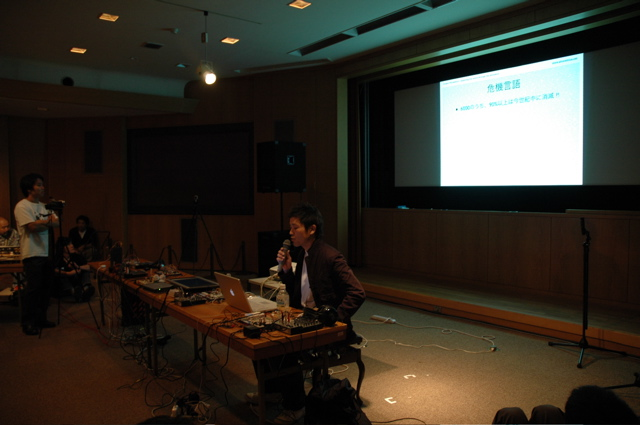
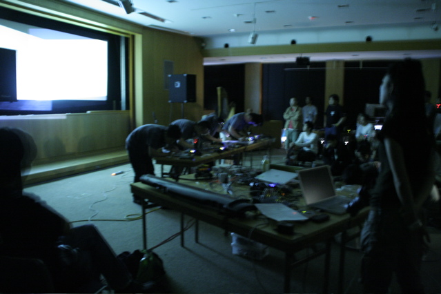
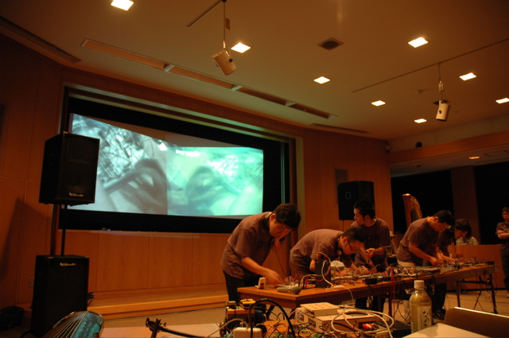

Index
Presenters
#000001
#000002
#000003
#000004
#番外編
#000005
#000006
#000007
|
#000002
ドークボットアワー in bend++
第二回目のドークボット東京が、「bend++」というイベントのコーナー「ドークボットアワー」として開催されました。既製の電子製品を自由に改造し、新しい使い方を発見しようというサーキットベンディング。bend++は「Bend Anything!」というサブタイトルを掲げ、電子回路のみならずあらゆる既成のものごとをベンディング（改造）しよう、というイベント。ドークボットアワーの時間までもワークショップ、コンサートなどが開かれ、"strange things with electricity" が集結しておりました。
 ドークボットアワー、最初はquarta330。トイザらスで買えるような原色バリバリの舶来知育電子玩具を改造したもの、ゲームボーイに謎の改造カートリッジを差して作ったシーケンサなどを用い、まさに正統派サーキットベンディングと呼ぶに相応しいライヴパフォーマンスを披露。パフォーマンス終了後、せっかくなので簡単に演奏装置を紹介して頂いた。改造ゲームボーイカートリッジがかなり興味深かったのだが、どうも○リーガルなものらしく多くは語って頂けなかった。残念！
quarta330氏はライヴパフォーマンスを活発にされており、彼の活躍はウェブサイトからチェックできる。=>link ドークボットアワー、最初はquarta330。トイザらスで買えるような原色バリバリの舶来知育電子玩具を改造したもの、ゲームボーイに謎の改造カートリッジを差して作ったシーケンサなどを用い、まさに正統派サーキットベンディングと呼ぶに相応しいライヴパフォーマンスを披露。パフォーマンス終了後、せっかくなので簡単に演奏装置を紹介して頂いた。改造ゲームボーイカートリッジがかなり興味深かったのだが、どうも○リーガルなものらしく多くは語って頂けなかった。残念！
quarta330氏はライヴパフォーマンスを活発にされており、彼の活躍はウェブサイトからチェックできる。=>link
2番目のプレゼンターは徳井直生。現在彼が関わっている「Phonethica」プロジェクトのプレゼンテーションが行われた。「Phonethica」はMac上で動くアプリケーションで、何語でもよいので単語を入れると、その発音に似た単語が世界中の言語から集められ画面上にコラージュされるというもの。そこで意味は全く問われず、ひたすら似た発音の言葉が集まってくる。興味の湧くままそれらをたどっていくことによって、世界中の言語に興味をひろげていけるソフトウェアだ。質疑応答まで非常に盛り上がった。
Phonethicaについての詳細はウェブサイトより。=>link
また徳井直生氏については彼自身のウェブサイトがある。=>link
次のプレゼンターは鈴木學。変な自作電子回路でライヴパフォーマンスを行っている通常のオシレータ回路の中に光センサや水などの不安定な要素を組み込んだ、ヨレヨレ演奏マシンを披露してくれた。壺型自作スピーカもかっこいい。
  やかんと桶に電極を仕込み、やかんから流れ出る水を電気の流れ道として使う演奏装置、水を電気分解するプロセスと電子回路を融合した謎のマシン、などなど。
彼は即興演奏の世界で活躍していて、第１回ドークボットプレゼンターであった伊東篤宏とも共演が多い。詳しい情報はウェブサイトより。
=>link やかんと桶に電極を仕込み、やかんから流れ出る水を電気の流れ道として使う演奏装置、水を電気分解するプロセスと電子回路を融合した謎のマシン、などなど。
彼は即興演奏の世界で活躍していて、第１回ドークボットプレゼンターであった伊東篤宏とも共演が多い。詳しい情報はウェブサイトより。
=>link
最後はBBBこと The Bread Board Band。
電子回路のプロトタイプを作る際に用いられる「ブレッドボード」。たくさん空いている穴に電子部品を差すことによって、回路を作っていける実験用のボードなのだが、彼らはこれを一種の楽器として演奏する5人組。メンバーはPSoCの原田克彦、アナログドラムマシンの斉田一樹、改造iPod, PSoCの大石彰誠、テープスクラッチの赤松正行、VJの林洋介。
最初にそれぞれのブレッドボードの機能について簡単に説明があり、それからパフォーマンスがスタート。使っているのは手のひらに乗るくらいのブレッドボードだが、出てくる音はとても暴力的で生々しい。後半からは会場の照明が落とされ、映像フィードバックによる激しい明滅の嵐！
=>link
 BBBの演奏を持ってドークボットアワーは終了。それぞれのシステムや楽器の見学会状態を経て、さらにbend++は「スーパーベンダーズ」なるライヴイベントへと続いていきました。
BBBの演奏を持ってドークボットアワーは終了。それぞれのシステムや楽器の見学会状態を経て、さらにbend++は「スーパーベンダーズ」なるライヴイベントへと続いていきました。
Text by 堀尾寛太
=> more photos
#000002
日時: 2005.10.02
会場: 町田国際版画美術館
プレゼンテーション:
徳井直生
鈴木學
ライブパフォーマンス:
quarta330
The Breadboard Band
企画進行: 堀尾寛太
協力: bend++
| |